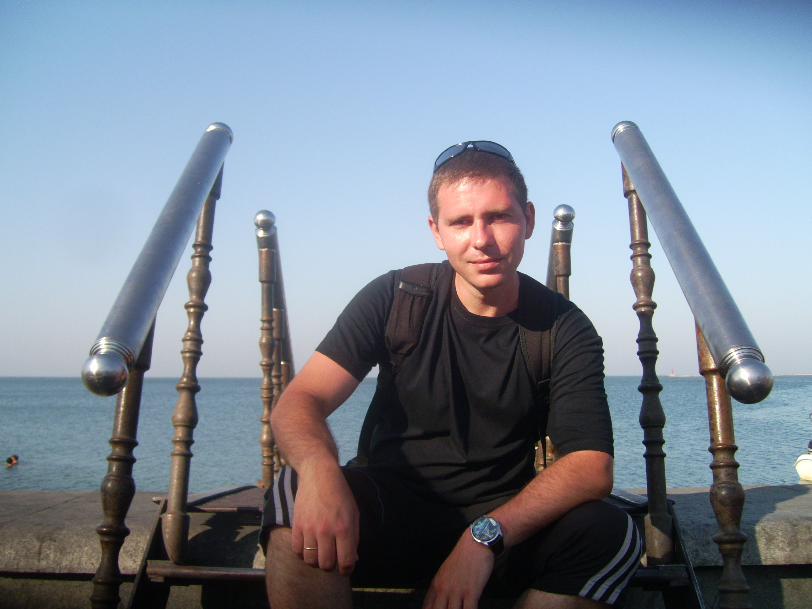
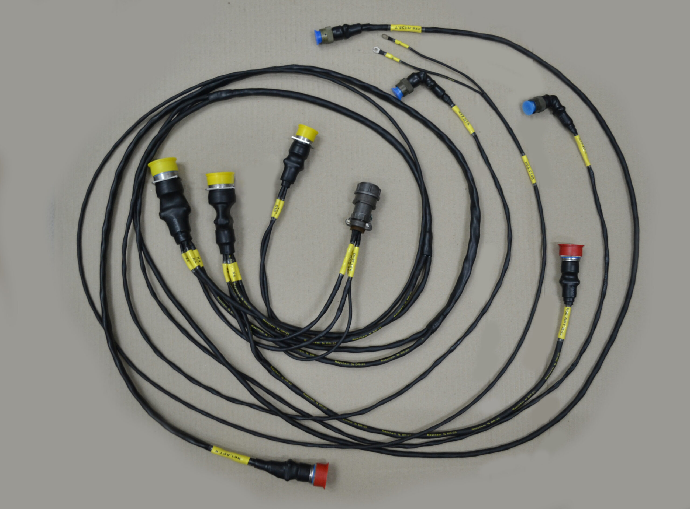
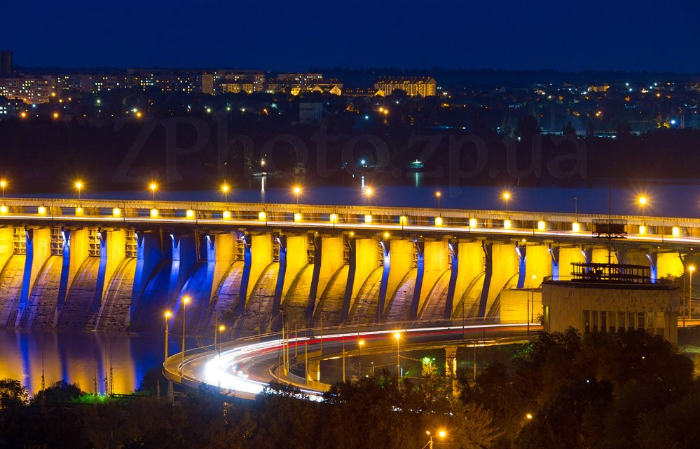
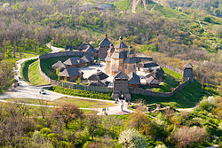

Вступ

Привіт, друзі! Мене звати Денис,
я вирішив поділитися трошки своїм життям
Я - чоловік та щасливий батько 13-річного сина.
Позвольте розповісти вам трошки більше про себе
та моє життя в чудовому місті Запоріжжі.
Моє одруження і народження сина - це найкращі рішення в моєму житті. Виховання 13-річного хлопчика виявляється цікавим та захоплюючим завданням, яке приносить багато радощів та сміху у наше сімейне життя.
Професійний Шлях
Почавши свій професійний шлях у Запоріжжі, я закінчив ЗПЛВТ, отримавши фах кухаря-офіцеанта-бармена судового. Проте життя привело мене в інший напрямок, і тепер я працюю в електротехнічному цеху, де ми займаємося виробництвом електро джгутів для гвинтокрилів. Це завдання вимагає від мене великої відповідальності та точності.
Життя в Запоріжжі
Запоріжжя - місто мррії та можливотсей. Розташоване на берегах річки Дніпро, воно славиться своєю багатою історією та героїчним минулим. Місто вражає своєю архітектурною красою та розташуванням на картах України.
 Визначні місця, такі як ДніпроГЕС та острів Хортиця стали символами Запоріжжя, а художні арт-об'єкти прикрашають вулиці, надаючи місту неповторний характер. Культурні заходи, фестивалі та традиції роблять це місто особливим і привабливим для тих, хто вирішує тут зупинитися.